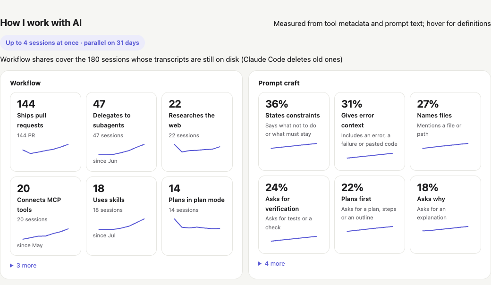
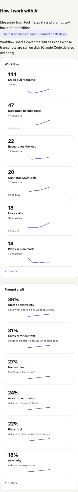
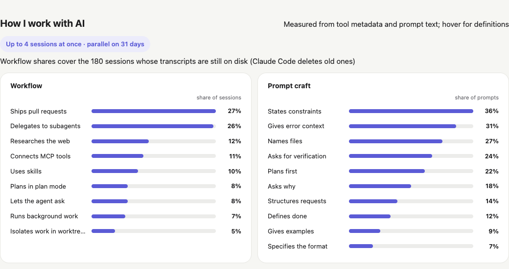
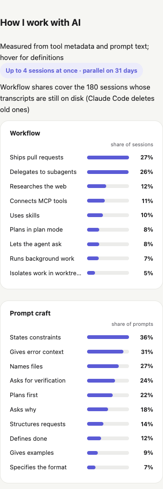
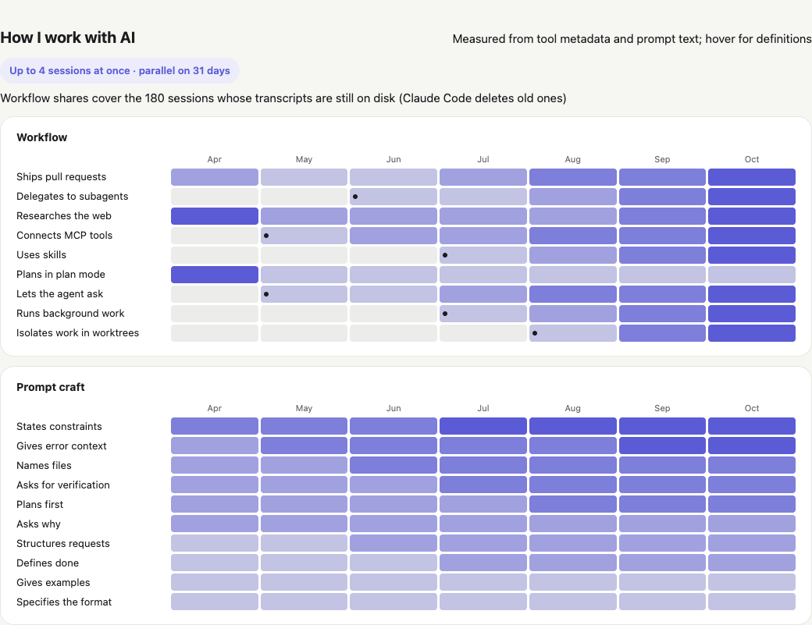
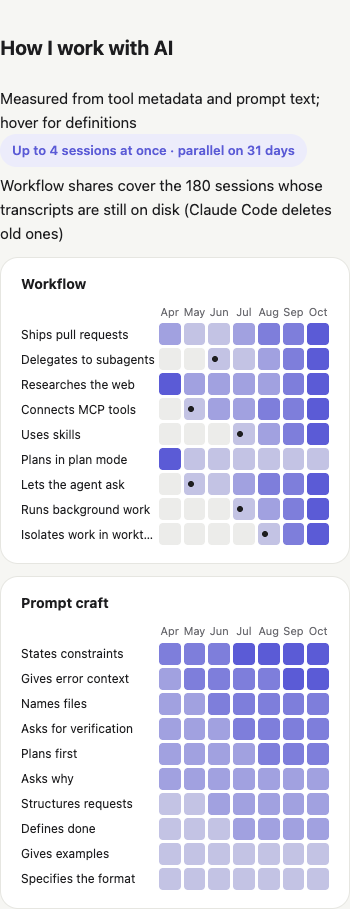
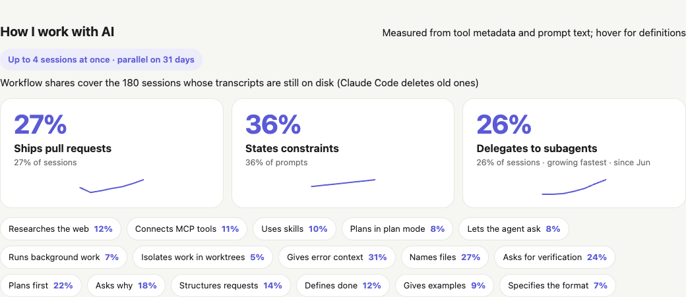
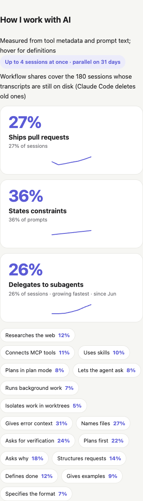

Review: “How I work with AI”
The same profile in each layout. Pick one (or combine), then delete the others.
A · Badges
One card per technique with its number, a monthly trend line and when it started.
Full private report · Share page


B · Bars
Two ranked lists: share of sessions (workflow) and share of prompts (prompt craft).
Full private report · Share page


C · Adoption timeline
Technique × month heat grid; a dot marks the first month used.
Full private report · Share page


D · Highlights
Three statements for the strongest and fastest-growing techniques, the rest as chips.
Full private report · Share page

